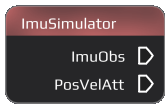
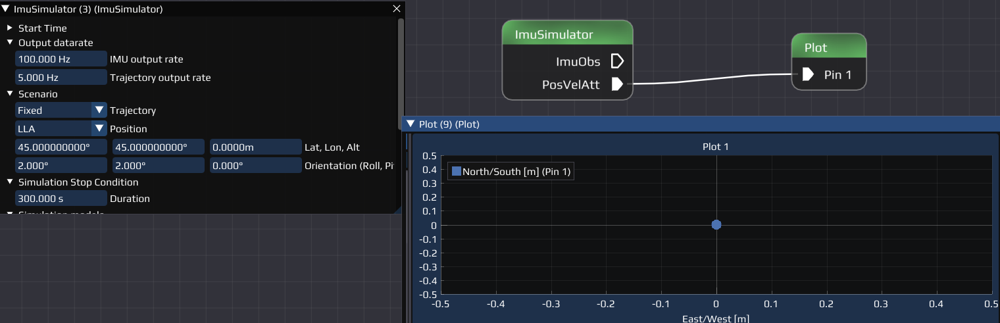
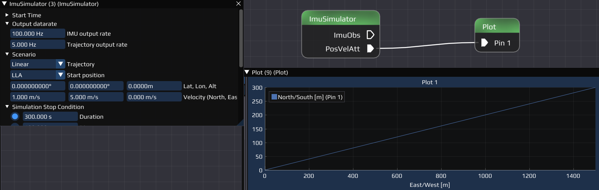
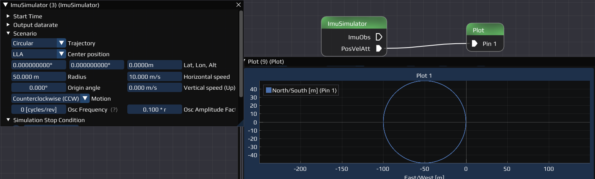
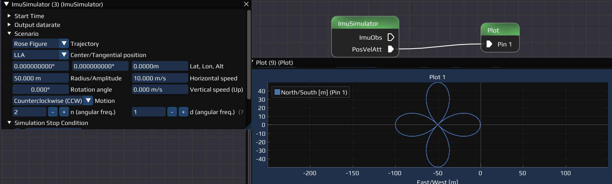
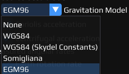
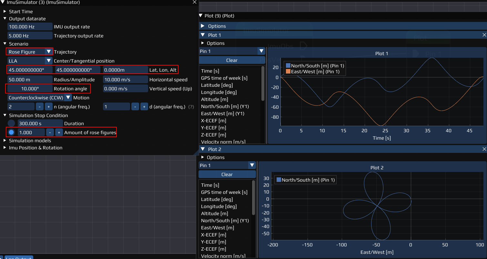

Introduction
The IMU Simulator simulates an inertial measurement unit where the user can select between different starting conditions, trajectories and other physical effects to be simulated.
Connections
- Input : The Node only has an input connection when the CSV trajectory is selected in the Settings.
- Output : The Node has two outputs:
- ImuObs : Outputs an ImuObsSimulated-flow that simulates IMU observation data.
- PosVelAtt : Outputs an PosVelAtt-flow that includes the simulated position, velocity, attitude and other parameters (time, quaternion...). Can be used for plotting (Plot Node).
Settings
The IMU Simulator offers a variety of settings that control the start condition, trajectory, output and offer additional parameters.
Start Time
Set the time when the simulation will be started.
- Current Computer Time : Uses the local time from the device
- Custom Time : Allows to select a custom time similar to Time .
Output datarate
Set the rate the Simulator outputs different information.
- IMU output rate : The rate the Simulator gives an output
- Trajectory output rate : The rate the trajectory is generated with
Scenario
Set the type and parameters for the trajectory.
- Trajectory : Select the general type of the trajectory.
- Fixed: A fixed position.

- Linear : Linear trajectory generated from input parameters.

- Circular : Circular trajectory generated from input parameters.

- CSV : trajectory generated from a csv-file. Instead of the input parameters, a preview of how the input file is interpreted will be generated as soon as a file is selected. TODO: \( \textcolor{red}{\text{IMAGE TO BE ADDED SOON.}} \)
- Rose Figure : Rose figure generated from input parameters. See https://en.wikipedia.org/wiki/Rose_(mathematics) for definition.

- Center/Tangential Point : Select the format and parameters for the center or tangential point. Only available for trajectory 1, 2, 4.
- LLA: Allows to set Latitude, Longitude, Attitude [m] and the orientation in roll, pitch, yaw [deg].
- ECEF: Earth-centered, Earth-fixed: Set the X, Y, Z [m] the orientation as above.
Simulation Stop Condition
Select and set when the simulation should stop. Some are only available for a specific trajectory.
- Duration : For all except CSV. How long the simulation will run and the trajectory will be generated.
- Distance to start : Only for Linear trajectory! Sets a distance from the starting point when the simulation will be stopped.
- Amount of Circles : Only for Circular trajectory! Sets how many circles should be simulated.
- Amount of rose figures : Only for Rose Figure trajectory! Sets the amount of roses that should be simulated, similar to the amount of circles .
Simulation models
Select and set different models regarding gravitation, acceleration etc.
- Measured acceleration 
- Gravity Model : Select the model to be used to simulate gravitation. Available are:
- None
- WGS84
- WGS84 (Skydel constants)
- Somigliana
- EGM96
- Coriolis acceleration : Enable/Disable if acceleration caused by the Coriolis effect should be taken into account
- Centrifugal acceleration : Enable/Disable if acceleration caused by centri*fugal* force should be taken into account
- Measured angular rates
- Earth rotation rate: Enable/Disable if the rate the earth spins should be taken into account
- Transport rate: //TODO: \( \textcolor{red}{\text{TO BE ADDED SOON.}} \)
IMU Position & Rotation
Select the position (XYZ) and rotation ( \(\underline{X}_b = \underline{\underline{R}} \cdot \underline{X}_p\)) of different sensors relative to the vehicles center of mass in the boy coordinate system.
- Lever Acc [m] : Set the position of the accelerometer.
- Lever Gyro [m] : Set the position of the gyroscope.
- Lever Mag [m] : Set the position of the magnetometer.
- Rotation Acc [deg] : Set the rotation of the accelerometer.
- Rotation Gyro [deg] : Set the rotation of the gyroscope .
- Rotation Mag [deg] : Set the rotation of the magnetometer.
Example Flow
If you don't know how to reproduce any of the explained steps, read the Getting Started first. Let us build a flow that we can use to plot the simulated position with different trajectories and settings.
Required Nodes:
Prepare Workspace and Plots:
- Add the ImuSimulator and Plot Node to your Workspace and connect them with the PosVelAtt - Pin 1 pins.
- Open the Plot Node Settings:
- Add a new Plot
- Drag and Drop the North/South [m] and East/West [m] into the Plot (successful if (Y1) appears behind them).
- Add a second new Plot
- Open the Options of the Plot
- Select East/West [m] in the X Data dropdown menu for Pin 1 (PosVelAtt).
- Drag and Drop the North/South [m] into the Plot.
- Right Click in the Plot, hover over Settings and select Equal (for equal axis scaling).
Now we can plot the north/south and east/west position over time (Plot 1) and the actual position around the center point (Plot 2).
Simulation:
- Open the Settings of the ImuSimulator.
- Select the Circular trajectory in Scenarios.
- Run the Flow. The result should look like the example for the circular trajectory above Scenario in Plot 2, additionally the components are shown in Plot 1.
- Repeat this for the Rose Figure, but with some changes:
- Change the Simulation Stop Condition to Amount of rose figures and select 1
- Add an arbitrary Center/Tangential Point.
- Add an arbitrary rotation. Example of how the result should look like:

Now, change the values and/or change other settings and options and compare the results.
- Note
- If you change LLA to ECEF , you also have to change the axis in the plots to the ECEF.
TODO: \( \textcolor{red}{\text{MORE EXAMPLES TO BE ADDED SOON.}} \)
Last updated: 2024-03-28